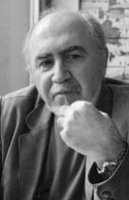

(1948 – )

Kendine özgü anlatımıyla Türk edebiyatının önemli romancılarından biri olan Mehmet Eroğlu, toplum karşısında yalnız olan bireyin kendini gerçekleştirme çabasını anlatan romanlarıyla tanınan bir yazarımızdır.
2 Ağustos 1948 tarihinde İzmir'de doğan Mehmet Eroğlu, çocukluk yıllarını edebiyat öğretmeni olan babası Faik Eroğlu'nun görev yaptığı Osmaniye ve Aydın'da geçirdi. Babasının tayin olduğu şehirlerden Uşak'ta başlayan ilköğrenimini kısa bir süre Edremit'te sürdürdükten sonra ilkokulu 1960 yılında İzmir Karşıyaka'daki Ankara İlkokulu'nda tamamladı. Aynı yıl -şimdiki adı Bornova Anadolu Lisesi olan- İzmir Maarif Koleji sınavını kazanan Mehmet Eroğlu, 7 yıl süren bir yatılı öğrencilik döneminin ardından 1967 yılında bu liseden mezun oldu ve aynı yıl ODTÜ Mühendislik Fakültesi İnşaat Mühendisliği Bölümü'ne girdi. Öğrenci derneği başkanlığını yaptığı bu fakülteden 1971 yılında, 12 Mart Darbesi sonrasında kurulan sıkıyönetim mahkemesinde yargılanmasına başlandığı sırada mezun oldu.
Mehmet Eroğlu, iki yıl süren yargılamanın (Dev-Genç Davası) sonucunda, 1973 yılında, Ankara 1 numaralı sıkıyönetim mahkemesince, TCK'nın 141-142. maddelerine muhalefetten 8 yıl ağır hapis ve 2 yıl sürgün cezasına mahkum edildi, ancak mahkumiyetin 1974 genel affıyla ortadan kalkmasıyla bu tarihten itibaren mühendis olarak çalışmasını sürdürdü.
Mehmet Eroğlu'nun yazmaya başlaması da bu döneme rastlamaktadır. 1974'te kaleme almaya başladığı ilk romanı Issızlığın Ortası'nın yazımı 1976'da bitti; ancak 1979 Milliyet Roman Ödülü'nü kazanmasına rağmen, 1980 yılındaki 12 Eylül darbesini izleyen karanlık günlerde –solcu ve anti-militarist unsurlar taşıdığı ve sakıncalı olduğu iddiasıyla– yayınevince romanın basımından vazgeçildi. Yazarın 1981'de tamamladığı Geç Kalmış Ölü adlı ikinci kitabı da yayınevinin benzer gerekçeler ileri sürmesi sonucunda ilk romanıyla aynı akıbeti paylaştı. Mehmet Eroğlu'nun edebiyat dünyasıyla buluşması yazmaya başlamasından on, ödül kazanmasından ise beş yıl sonra, ancak 12 Eylül darbesinin etkilerinin hafiflemesiyle mümkün oldu. Yazarın romanları 1984 yılından itibaren art arda yayımlanmaya başladı: 1984 yılında Issızlığın Ortasında (ilk yayımında "Ortası", "Ortasında" olarak değiştirilmiştir) ve Geç Kalmış Ölü; 1986'da Yarım Kalan Yürüyüş; 1989'da Adını Unutan Adam. Bu dört romanıyla Türk edebiyatında kendine özgü, değişik ve sağlam bir yer edinen Mehmet Eroğlu birbirini bütünler nitelikteki ilk iki romanıyla Milliyet Roman Ödülü'nün ardından ülkemizin en değerli edebiyat ödüllerinden birisi olan Orhan Kemal Roman Armağanı ile Madaralı Roman Ödülleri'ni kazandı.
1989 yılında, on beş yıl boyunca çalıştığı kamu kesiminden siyasi baskılar sonucunda istifa etmek zorunda kalan Mehmet Eroğlu bu tarihten itibaren bir yandan mühendislik kariyerini sürdürürken bir yandan da yazmaya devam etti ve 1994'te Yürek Sürgünü adlı beşinci romanını tamamladı. Altıncı romanı Yüz:1981 ancak 2000 yılında yayımlanabildi.
Mehmet Eroğlu'nun sinema çalışmaları TRT'de yayınlanan Sızı (1994, 4 Bölüm), Issızlığın Ortası (1998, 4 Bölüm) ve Tutku Çemberi (2000, 13 Bölüm) adlı televizyon dizilerinin yanı sıra 1996 yılında İstanbul Film Festivali'nde En İyi Türk Filmi ve Uluslararası Sinema Yazarları ve Eleştirmenleri -Fibresci- ödüllerini kazanan 80. Adım ve 1997 Antalya Altın Portakal Jüri Özel Ödülü ile, 1997 Adana Altın Koza En İyi 3. Film Ödülü'nü kazanan Solgun Bir Sarı Gül gibi sinema filmi senaryolarını da içermektedir.
Mehmet Eroğlu, 1999 yılından bu yana Ankara'da, Um:ag (Uğur Mumcu Araştırmacı Gazetecilik Vakfı) bünyesinde sürdürülen Yazma Seminerleri kapsamında yaratma cesareti, kurgu ve senaryo yazım teknikleri dersleri vermekte, Uygulamalı Yazma İşlikleri düzenlemektedir. Zamanın Manzarası adlı yedinci romanı Ekim 2002'de, sekizinci romanı Kusma Kulübü Şubat 2004'te, son romanı Düş Kırgınları ise Eylül 2005'te yayınlanan yazar halen Ankara'da yaşamaktadır.
Romanları: Geç Kalmış Ölü (1984), Issızlığın Ortası (1984), Yarım Kalan Yürüyüş (1986), Adını Unutan Adam (1989), Yürek Sürgünü (1994), Yüz:1981 (2000), Zamanın Manzarası (2002), Kusma Kulübü (2004), Düş Kırgınları (2005), Belleğin Kış Uykusu (2006), Mehmet: Fay Kırığı 1 (2009)